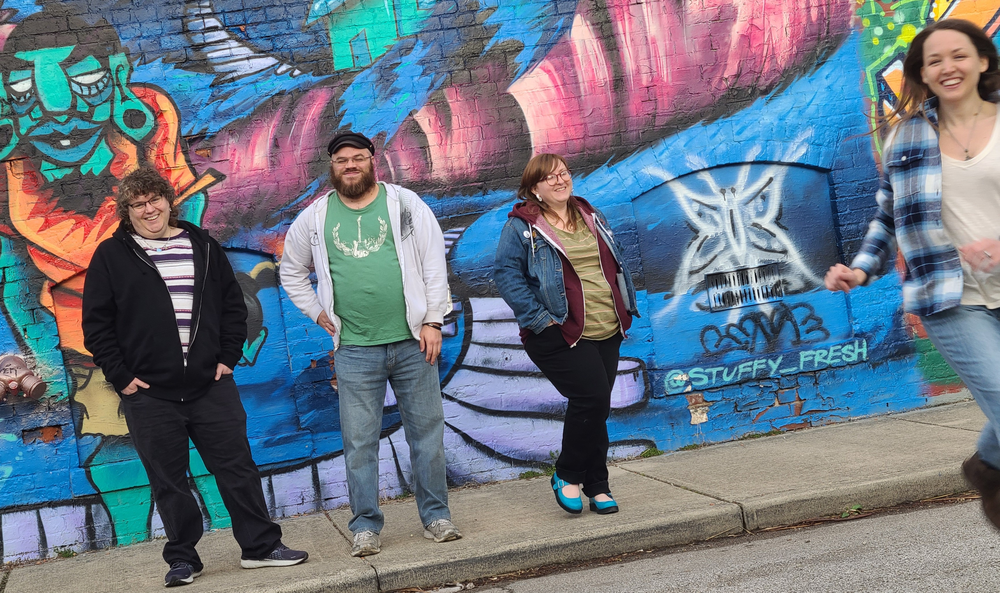

The Skyspeakers are a stoner doom and heavy psychedelic band from Indianapolis, featuring Chris Latta on bass and vocals, Jessie Browne-Michaels on alto sax and vocals, Patrick Phillips on drums, and Leah Andrews on synthesizers.
Their sound would appeal to fans of Rezn, Ruby the Hatchet, and Blackwater Holylight. They have shared a stage with Year of the Cobra and Slow Wake.
Their self-produced EP
Echo Hall was released September 23rd, 2022. They are currently booking shows in and around Indianapolis.
